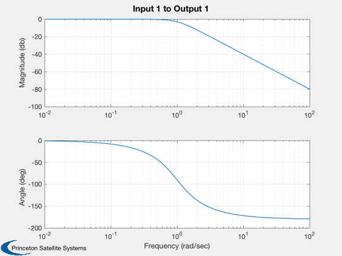
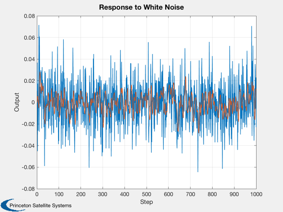

Designs earth sensor noise filters for the ComStar satellite.
These filter earth sensor roll and pitch measurements. Earth sensors tend to be very noisy which is a problem for high bandwidth loops. Saves the filter to the mat-file NoiseF.
------------------------------------------------------------------------- See also CButter, StatePrp, ComStar, Plot2D, WriteCM -------------------------------------------------------------------------
Contents
%------------------------------------------------------------------------------- % Copyright 1994-1996 Princeton Satellite Systems, Inc. All rights reserved. % Since version 2. %-------------------------------------------------------------------------------
Simulation parameters
%---------------------- nSim = 1000; cMatrices = 'yes'; % If yes will dump matrices to a file and display them
Filter parameters
%------------------
tSamp = 0.5;
wCutoff = 1;
nOrder = 2;
Call like this to get a plot
%-----------------------------
CButter(nOrder,wCutoff);
 Get the discrete time equations
%-------------------------------- [a,b,c,d] = CButter(nOrder,wCutoff,tSamp,'Delta'); x = zeros(length(a),1); yPlot = zeros(1,nSim); u = ComStar('ESA Roll Std')*randn(1,nSim); for k = 1:nSim [yPlot(k),x] = StatePrp(a,b,c,d,x,u(k),'Delta'); end fprintf(1,'Filter Order = %12i \n',nOrder); fprintf(1,'Filter Cutoff = %12.8f rad/sec\n',wCutoff); fprintf(1,'Sampling Period = %12.8f sec \n',tSamp); fprintf(1,'Mean = %12.8f \n',mean(yPlot)); fprintf(1,'Attenuation = %12.8f \n', std(yPlot)/std(u)); Plot2D(1:nSim,[u;yPlot],'Step','Output','Response to White Noise'); [aN,bN,cN,dN] = CButter(nOrder,wCutoff); fPath = fileparts(which(mfilename)); save(fullfile(fPath,'NoiseF'),'aN','bN','cN','dN','-v6')
Filter Order = 2 Filter Cutoff = 1.00000000 rad/sec Sampling Period = 0.50000000 sec Mean = -0.00066414 Attenuation = 0.43095041
If requested save and dump the controller matrices
%--------------------------------------------------- if( strcmp(cMatrices,'yes') ) fID = fopen(fullfile(fPath,'ESANoise.txt'),'w'); [aD,bD,cD,dD] = CButter(nOrder,wCutoff,tSamp,'Delta'); WriteCM(fID,'A Matrix','fRollAMatrix',reshape(aD',1,length(aD)^2),12,20,3); WriteCM(fID,'B Matrix','fRollBMatrix',bD,12,20,3); WriteCM(fID,'C Matrix','fRollCMatrix',cD,12,20,3); WriteCM(fID,'D Matrix','fRollDMatrix',dD,12,20,3); WriteCM(fID,'A Matrix','fPitchAMatrix',reshape(aD',1,length(aD)^2),12,20,3); WriteCM(fID,'B Matrix','fPitchBMatrix',bD,12,20,3); WriteCM(fID,'C Matrix','fPitchCMatrix',cD,12,20,3); WriteCM(fID,'D Matrix','fPitchDMatrix',dD,12,20,3); fclose(fID); disp('Noise Filter Matrices') disp(aD); disp(bD); disp(cD); disp(dD); end %-------------------------------------- % PSS internal file version information %--------------------------------------
Noise Filter Matrices
-0.098122 0.34383
-0.34383 -0.58436
0.098122
0.34383
1 0
0